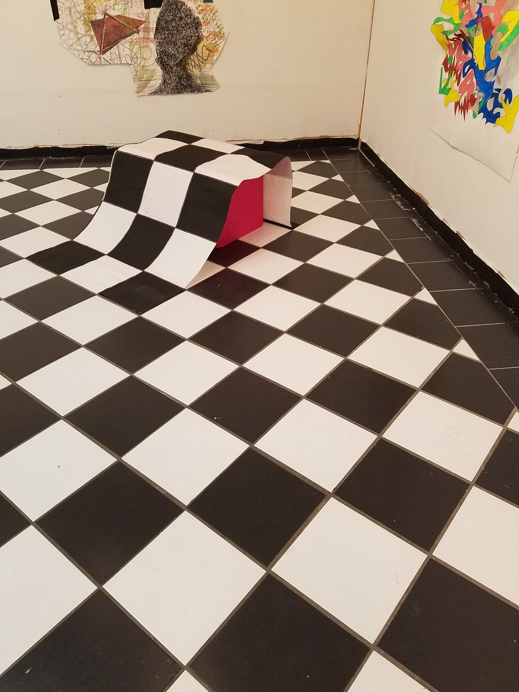

Danika Dorris
Student
Chattanooga, TN
ddorris@vols.utk.edu
423-598-0096
Skills
Programming
Simulation
Machine Learning and Data Analysis
Lean
Languages
English
Spanish
Italian
Courses
- IE 406: Simulation
- IE 421: Information Systems
- IE 427: Lean Manufacturing
- IE 304: Human Factors
- IE 404/422: Senior Design I/II
Work Experience
Strategic Planning Assistant / Metropolitan Ministries
Jun 2017 - July 2017
Provided input to strategic planning process design and helped facilitate implementation of the process.
Undergraduate Researcher / UT Medical Center
May 2016 - Jan 2017
Analyzed patient data to relate pre- and intra-operative factors to post-operative complication. Developed a predictive model based on machine learning concepts using Python 3.
Intern in the Office of the Director / US Dept. of Energy OSTI
Jun 2016 - Sept 2016
Led and organized infrastructure and equipment procurements for the facility. Documented security information and record-keeping procedures.
Education
University of Tennessee Current
WebsiteAug 2014
Bachelor's Degree of Science in Industrial Engineering
Minors: Reliability and Maintainability, Business Administration, and Studio Art
Lorenzo DeMedici Institute
Florence, Italy
Jun 2015
Study Abroad. Took classes for Art minor (Perspective Drawing and Art History)
Activities
"Free Space" : Solo Gallery Exhibition
Gallery 1010
Oct 2017

This body of work actively demonstrates the interaction between elements of the 2-D drawings and 3-D elements creates different kinds of space that challenge the viewer to think about what kind of space the elements are existing in.
Phone Home: Group Exhibition
Knoxville Center Mall
Apr 2017

The pieces featured in Phone Home are the culmination of countless hours of work by 20 young artists seeking belonging, understanding, and ownership in a contemporary, that for many, seems transient and intangible. Only by building a sanctuary of thought on the page with their own hands do they hope to attain some semblance of propietorship. Yet, in this joint pursuit they find that home lies not so much in the work itself as it does in the community this pursuit creates.